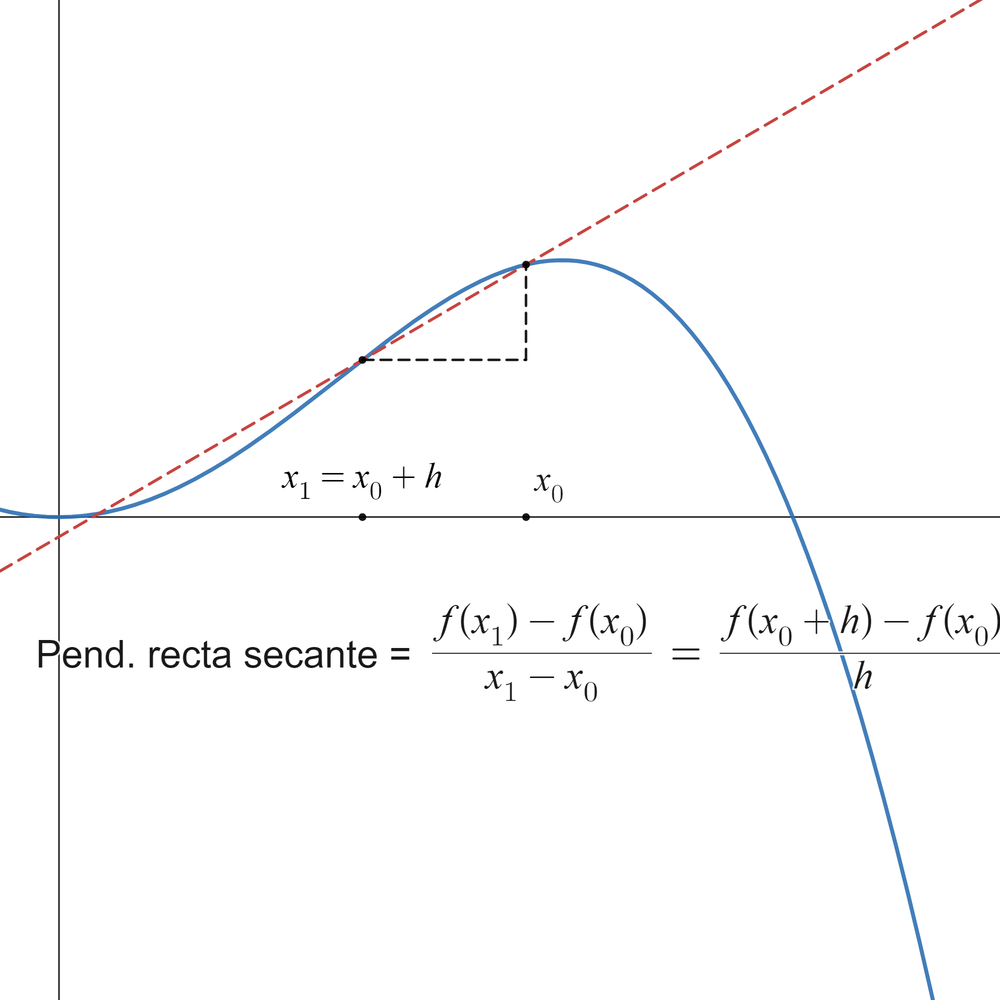

3.1. Definición de derivada y propiedades básicas#
3.1.1. Definición de derivada#
Vamos a introducir este nuevo concepto mediante un ejemplo. Para ello copiamos el célebre experimento de Galileo en la torre de Pisa y nos preguntamos:
Supongamos que dejamos caer una pelota desde lo más alto de un edificio de \(300\) m. ¿Cuál será la velocidad de la pelota después de 5 segundos?
Galileo llegó a la conclusión de que el espacio recorrido es directamente proporcional al cuadrado del tiempo transcurrido, según la fórmula
fórmula que se acerca mucho a la realidad… siempre que despreciemos el rozamiento ejercido por el aire.
Entonces, ¿cómo hallamos la velocidad en \(t=5\) segundos? Podemos hacer una velocidad promedio:
o, mejor todavía,
Realmente, lo que estamos haciendo es aproximar la pendiente de la recta tangente a la función \(s\) en el punto \(t=5\). Recordemos, antes de nada, que la pendiente de una recta es la tangente del ángulo que forma con el eje \(OX\), como se muestra en la siguiente figura:

Si ahora queremos calcular la pendiente de la recta tangente a una función \(f\) en un punto \(x_0\), lo que haremos será calcular las pendientes de las rectas secantes a \(f\) por dos puntos próximos, \(x_0\) y \(x\), y hacer que \(x\) se acerque a \(x_0\) (es decir, tomar el límite cuando \(x\to x_0\)). La ilustración gráfica de este proceso se muestra en la siguiente figura (con la que, por cierto, puedes jugar en el siguiente link: https://www.desmos.com/calculator/piskepauzm):
{kind=link}
Definition
Sea \(f:(a,b)\rightarrow\mathbb{R}\), \(x_0\in(a,b)\). Definimos la derivada de \(f\) en \(x_0\) como el límite, si existe,
Remark
Aquí ya vemos la utilidad de no incluir el punto \(x_0\) (en este caso, el punto \(h=0\)) en la definición de límite. En la expresión \(\displaystyle\lim_{h\to 0}\frac{f(x_0+h)-f(x_0)}{h}\) no podemos hacer nada si \(h=0\), ya que tendríamos una división entre \(0\). Pero, afortunadamente, justo el punto \(h=0\) no se incluye en la definición de límite (recordemos eso de \(0<|h-0|<\delta\)…).
El cociente \(\frac{f(x)-f(x_0)}{x-x_0}\) mide la variación de la función respecto a la variación de la variable. Por ese motivo a \(f'(x_0)\) se le denomina, en ocasiones, coeficiente de variación de \(f\), o razón de cambio de la función \(f\), en el punto \(x_0\).
Es decir, la derivada de una función en un punto indica la variación instantánea de la función en ese punto. Por ejemplo, la aceleración, que es la variación de velocidad, se escribe matemáticamente como \(\frac{dv}{dx}\), es decir, la derivada de la velocidad respecto al tiempo.
Que la derivada sea la variación instantánea de una variable dependiente, \(y\), respecto a otra variable independiente, \(x\), será fundamental cuando veamos los modelos matemáticos en ecuaciones diferenciales.
Ahora ya podemos calcular la ecuación de la recta tangente utilizando la fórmula punto-pendiente,
\[ y-y_{0}=m\left(x-x_{0}\right) \Longrightarrow y=y_{0}+m\left(x-x_{0}\right). \]En este caso, \(\left(x_{0},y_{0}\right)=\left(x_{0},f\left(x_{0}\right)\right)\), \(m=f'\left(x_{0}\right)\). Y la recta tangente,
\[ y=f\left(x_{0}\right)+f'\left(x_{0}\right)\left(x-x_{0}\right). \]
3.1.2. Derivadas laterales#
Ahora, como estamos definiendo la derivada como un límite, podemos hablar de derivada por la izquierda y derivada por la derecha.
Definition (Derivadas laterales)
Sea \(f:(a,b)\rightarrow\mathbb{R}\), \(x_0\in(a,b)\). Definimos
derivada por la izquierda de \(f\) en \(x_0\) como
\[ f'(x_0^{-}):=\lim_{h\to 0^{-}}\frac{f(x_0+h)-f(x_0)}{h}, \]derivada por la derecha de \(f\) en \(x_0\) como
Property
Sea \(f:(a,b)\rightarrow\mathbb{R}\), \(x_0\in(a,b)\). \(f\) es derivable en \(x_0\) si y sólo si es derivable por la izquierda y por la derecha en \(x_0\) y ambas derivadas coinciden.
El ejemplo más típico de función no derivable es la función valor absoluto, que no es derivable en el \(0\). Veámoslo, calculando sus derivadas parciales. Recordemos que
Entonces,
Entonces \(f'\left(0^{-}\right)\not=f'\left(0^{+}\right)\), por lo que la función valor absoluto no es derivable en \(0\).
Gráficamente, podemos darnos cuenta de lo que pasa si recordamos la gráfica de la función valor absoluto:

El punto \(x=0\) es un punto anguloso para esta curva, es decir, un punto en el que la pendiente de la curva varía bruscamente. Pasa de ser \(-1\) a la izquierda de \(0\) a ser \(1\) a su derecha. Al producirse esta variación brusca la función no puede ser derivable en el \(0\).
Aquí podéis ver otro ejemplo completo:
3.1.3. Propiedades de la derivación#
Veamos ahora algunas propiedades importantes de la función derivada.
Property
Sea \(f(a,b)\rightarrow\mathbb{R}\), \(x_0\in\mathbb{R}\). Si \(f\) es derivable en \(x_0\), entonces \(f\) es continua en \(x_0\).
Esta propiedad se puede resumir en
Conviene saber leerla correctamente. Según la relación lógica
esta propiedad es lo mismo que
Ésta es la forma más habitual de aplicación. Si nos preguntan si determinada función es derivable en algún punto, lo primero que debemos hacer es comprobar si es continua. Si efectivamente lo es, debemos comprobar si se cumple la definición de derivada, pero si no es continua ya habremos acabado, porque en ese caso no podrá ser derivable.
Property (Derivadas elementales)
\(\displaystyle \dfrac{d}{dx} \left(x^{n}\right) = nx^{n-1}\),
\(\displaystyle \dfrac{d}{dx} \left(\ln x\right) = \dfrac{1}{x}\),
\(\displaystyle \dfrac{d}{dx} \left(\log_{a}x\right) = \dfrac{1}{x}\log_{a} e\),
\(\displaystyle \dfrac{d}{dx} \left(e^x\right) = e^x\),
\(\displaystyle \dfrac{d}{dx} \left(a^x\right) = a^x\ln a\),
\(\displaystyle \dfrac{d}{dx} \left(\sin x\right) = \cos x\),
\(\displaystyle \dfrac{d}{dx} \left(\cos x\right) = -\sin x\),
\(\displaystyle \dfrac{d}{dx} \left(\tan x\right) = \dfrac{1}{\cos^2 x}\),
\(\displaystyle \dfrac{d}{dx} \left(\arcsin x\right) = \dfrac{1}{\sqrt{1-x^2}}\),
\(\displaystyle \dfrac{d}{dx} \left(\arccos x\right) = \dfrac{-1}{\sqrt{1-x^2}}\),
\(\displaystyle \dfrac{d}{dx} \left(\arctan x\right) = \dfrac{1}{1+x^2}\).
Property (Propiedades aritméticas de la derivada)
Sean \(f,g:(a,b)\rightarrow\mathbb{R}\), dos funciones derivables en un punto \(x_0\in(a,b)\). Entonces
para cualquier \(\lambda\in\mathbb{R}\), la función \(\lambda f\) es derivable en \(x_0\) y
\[ \left(\lambda f\right)'(x_0)=\lambda f'(x_0), \]\(f\pm g\) es derivable en \(x_0\) y
\[ \left(f\pm g\right)'(x_0)=f'(x_0)\pm g'(x_0), \]\(fg\) es derivable en \(x_0\) y
\[ \left(fg\right)'(x_0)=f'(x_0)g(x_0)+f(x_0)g'(x_0), \]si \(g(x_0)\not= 0\), entonces \(\dfrac{f}{g}\) es derivable en \(x_0\) y
\[ \left(\frac{f}{g}\right)'(x_0)=\frac{f'(x_0)g(x_0)-f(x_0)g'(x_0)}{g(x_0)^2}. \]
Property (Regla de la cadena)
Consideramos las funciones \(f:(a,b)\rightarrow\mathbb{R}\), derivable en \(x_0\in(a,b)\), y \(g:f(a,b)\to\mathbb{R}\), derivable en \(f(x_0)\). Entonces la función composición \(g\circ f\) es derivable en \(x_0\) y además
Veamos algunos ejemplos de aplicación de estas reglas:
Derivar \(\ln\left(\cos x\right)\).
El resultado es
\[ \left(\ln\left(\cos x\right)\right)'=\frac{1}{\cos x}\left(\cos x\right)'=\frac{-\sin x}{\cos x}. \]Pensemos qué es lo que hemos hecho:
Estamos componiendo la función \(f(x)=\cos x\) con \(g(x)=\ln x\). Esto es sencillo de comprobar, ya que
\[ \left(g\circ f\right)(x)=g\left(f(x)\right)=g\left(\cos x\right)=\ln\left(\cos x\right). \]Entonces, según la regla de la cadena, \(\left(g\circ f\right)'(x)=g'\left(f(x)\right)f'(x)\).
Ahora, \(f'(x)=-\sin x\) y \(g'(x)=\frac{1}{x}\), por lo que \(g'(\cos x)=\frac{1}{\cos x}\), lo que nos permite obtener el resultado anunciado.
Veamos un ejemplo de aplicación un poco más complicado.
\[\begin{eqnarray*} \left(\textrm{atan}\left(\frac{\sin x}{1+\cos x}\right)\right)'&=&\frac{1}{1+\frac{\sin^2 x}{\left(1+\cos x\right)^2}} \frac{\left(\cos x\right)\left(1+\cos x\right)+\sin^2 x}{\left(1+\cos x\right)^2}=\\ &=&\frac{\cos x+\cos^2 x+\sin^2 x}{\left(1+\cos x\right)^2+\sin^2 x} =\frac{1+\cos x}{1+\cos^2 x+2\cos x+\sin^2 x}= \\ &=&\frac{1+\cos x}{2+2\cos x}=\frac{1}{2}, \end{eqnarray*}\]donde hemos utilizado en dos ocasiones que \(\sin^2 x+\cos^2 x=1\).
3.1.4. Derivación en Sympy#
Para calcular simbólicamente la derivada primera de una función mediante Sympy se emplea la función diff. Por ejemplo
import sympy as sp
x=sp.symbols('x')
f_exp=sp.exp(x)*sp.cos(x)
d1f_exp=sp.diff(f_exp,x)
print('Para la función: ',f_exp)
print('La derivada primera es: ',d1f_exp)
Para la función: exp(x)*cos(x)
La derivada primera es: -exp(x)*sin(x) + exp(x)*cos(x)
3.1.5. Derivación de algunos casos especiales.#
3.1.5.1. Derivación de la función inversa.#
Sea \(f:(a,b)\to\mathbb{R}\), \(x_0\in(a,b)\). Supongamos que \(f\) es derivable en \(x_0\) y que \(f(x_0)\not=0\). Entonces \(f^{-1}\), si existe, es derivable y
o, lo que es lo mismo,
Destaquemos que estamos relacionando la derivada de la función inversa con \(1\) partido por la derivada de la función inversa. Esto es bastante sorprendente, porque a estas alturas ya debemos saber que \(f^{-1}\not=\frac{1}{f}\).
Veamos un ejemplo. Si consideramos la función \(y=f(x)=\cos x\), la función inversa es el arco-coseno, \(f^{-1}(y)=\arccos y\). Derivando directamente,
Vamos a ver si esta expresión coincide con la que obtenemos aplicando la fórmula que expusimos al pincipio. En este caso
donde, en la última igualdad, hemos utilizado la definición inicial de la función: \(y= f(x)=\cos x\).
3.1.5.2. Derivación implícita#
Una ecuación implícita es una ecuación de la forma
es decir, una ecuación donde \(x\) e \(y\) aparecen mezclados y donde no es posible (generalmente) separar la \(y\) para llegar a una ecuación explícita,
Un ejemplo de ecuación implícita sería
Si a partir de una ecuación implícita queremos conocer el valor de la derivada de \(y\) respecto a \(x\), \(y'=\frac{dy}{dx},\) derivaremos término a término, utilizando las reglas habituales de derivación, pero teniendo en cuenta que en los términos donde aparezca \(y\), o algo que dependa de \(y\), al derivar aplicando la regla de la cadena obtendremos la correspondiente expresión multiplicada por \(y'\). Esto no sucede si el término depende de \(x\), ya que cuando derivamos respecto a \(x\) aparecería la derivada de \(x\) respecto a la misma \(x\), \(\frac{dx}{dx}\), que es \(1\). Veamos algún ejemplo sencillo:
\(\displaystyle \left(x^3\right)'=3x^2\frac{dx}{dx}=3x^2\),
\(\displaystyle \left(y^3\right)'=3y^2\frac{dy}{dx}=3y^2y'\),
\(\displaystyle \left(cos(2y)\right)=-\sin(2y)2\frac{dy}{dx}=-2\sin(2y)y'\).
Entonces, en una derivada más complicada (utilizando la regla de derivación del producto),
Como podemos ver, el resultado final es el valor de \(y'\) en función de \(x\) y de \(y\). Generalmente no es posible obtener el valor de \(y'\) solamente en función de \(x\).
Puedes mirar en los siguientes links, si quieres entender esto mejor:
https://es.snapxam.com/calculators/calculadora-derivacion-implicita (¡Calculadora para derivar funciones implícitas! Si es que hay de todo en internet…)
3.1.5.3. Derivación logarítmica#
Supongamos que tenemos una expresión del tipo
y queremos derivarla. Como tenemos una función que depende de \(x\) tanto en la base como en el exponente no lo podemos hacer directamente. Entonces aplicamos logaritmos y de la expresión anterior resulta
y ahora hacemos una derivación implícita para obtener
Veámoslo sobre un ejemplo:
Aquí tienes más información y otros ejemplos:
3.1.6. Regla de l’Hôpital#

(Imagen tomada de la cuenta de Twitter @MathMatize, concretamente de https://twitter.com/MathMatize/status/1678166772359348225)
Nos queda todavía un punto que debemos resolver: Cuando aplicamos las propiedades aritméticas de los límites nos podemos encontrar una desagradable sorpresa si alguna de las partes involucradas tiene como límite \(+\infty\) o \(-\infty\). Por ejemplo, si recordamos que \(\displaystyle\lim_{x\to x_{0}} \left(f(x)+g(x)\right) = \lim_{x\to x_{0}} f(x) + \lim_{x\to x_{0}} g(x)\), si ahora suponemos que \(\displaystyle\lim_{x\to x_{0}} f(x) = 4\), y \(\displaystyle\lim_{x\to x_{0}} g(x) = + \infty\), ¿cómo sumamos \(4\) y \(+\infty\)?
Hay algunas reglas que nos ayudan a hacer estas operaciones con límites donde aparece + o -\(\infty\) o, también, al \(0\) (en ocasiones, a esto se llama aritmética del infinito). Puedes mirar aquí la tabla: http://asignaturas.topografia.upm.es/matematicas/primero/Apuntes/Funciones/Operaciones con limites infinitos.pdf, nosotros la resumimos a continuación:
Property (Operaciones con límites infinitos)
Suma:
\(\lambda + \infty = +\infty\), \(\forall \lambda\in\mathbb{R}\),
\(\lambda - \infty = -\infty\), \(\forall \lambda\in\mathbb{R}\),
\(+\infty+\infty = +\infty\),
\(-\infty-\infty=-\infty\).
Multiplicación:
\(\lambda*\pm\infty=\pm\infty\), \(\forall \lambda >0\),
\(\lambda*\pm\infty=\mp\infty\), \(\forall \lambda <0\),
\((+\infty)(+\infty) = (-\infty)(-\infty) = +\infty\),
\((+\infty)(-\infty) = (-\infty)(+\infty) = -\infty\).
División:
\(\displaystyle\frac{\lambda}{\pm\infty} = 0\), \(\forall \lambda\in\mathbb{R}\), \(\lambda\neq 0\),
\(\displaystyle\frac{\lambda}{0^{+}} = +\infty\), \(\displaystyle\frac{\lambda}{0^{-}} = -\infty\), \(\forall \lambda > 0\),
\(\displaystyle\frac{\lambda}{0^{+}} = -\infty\), \(\displaystyle\frac{\lambda}{0^{-}} = +\infty\), \(\forall \lambda < 0\),
\(\displaystyle\frac{+\infty}{0^{+}}=+\infty\) (en otros casos, se aplica la regla de los signos),
\(\displaystyle\frac{0}{\pm\infty}=0\).
[Nota: Diremos que \(\displaystyle\lim_{x\to x_0} f(x) = 0^{+}\) si la función se acerca a \(0\) por valores positivos, es decir, desde la derecha.]
Potencias:
\(\displaystyle 0^{+\infty} = 0\),
\(\displaystyle 0^{-\infty} = +\infty\),
\(\displaystyle\left(+\infty\right)^{+\infty} = +\infty\),
\(\displaystyle \left(+\infty\right)^{-\infty} = 0\),
\(\displaystyle \left(-\infty\right)^{+\infty} = \not\exists\,\).
En todo caso, volvemos a recordar que no estamos operando con números reales y con símbolos. Al decir, por ejemplo, que \(5 + \infty = +\infty\) lo que realmente queremos decir es que si sumamos una función que, en un punto determinado, tiene como límite \(5\) con otra función que, en el mismo punto, tiene como límite \(+\infty\), el resultado tendrá como límite \(+\infty\).
Sin embargo, hay algunas operaciones con límites infinitos que no siempre dan el mismo resultado. Son las llamadas indeterminaciones. A saber:
Property (Indeterminaciones)
\(\displaystyle \frac{0}{0} = \) INDETERMINADO,
\(\displaystyle \frac{\pm\infty}{\pm\infty} = \) INDETERMINADO,
\(\displaystyle 0\left(\pm\infty\right) = \) INDETERMINADO,
\(+\infty - \infty = \) INDETERMINADO,
\(\displaystyle 1^{\pm\infty} = \) INDETERMINADO,
\(\displaystyle 0^{0} = \) INDETERMINADO,
\(\displaystyle \left(\pm\infty\right)^{0} = \) INDETERMINADO.
¡Cuidado! Cuando decimos INDETERMINADO no queremos decir que no exista el límite, si no que el resultado puede variar según los casos. Por ejemplo, hay veces que al dividir una función que converja a \(+\infty\) entre otra función que también converja a \(+\infty\) el límite del cociente será \(5\), pero en otros casos ese cociente convergerá a \(0\), o a \(+\infty\), o a…
Como no podemos dar un resultado a priori tendremos que estudiar caso a caso. ¿Cómo se hace eso? No siempre funciona, pero en muchos casos podemos echar mano de la Regla de l’Hôpital.
Theorem (Regla de l Hôpital)
Sea \(x_{0}\in\mathbb{R}\) y \(f\) y \(g\) funciones derivables en \(\left(x_{0}-r, x_{0}\right)\cup\left(x_{0}, x_{0}+r\right)\).
Si \(\displaystyle \lim_{x\to x_{0}} f(x) = \displaystyle\lim_{x\to x_{0}} g(x) = 0\) y \(\exists\displaystyle\lim_{x\to x_{0}} \dfrac{f'(x)}{g'(x)}\) entonces \(\exists\displaystyle\lim_{x\to x_{0}} \dfrac{f(x)}{g(x)}\) y
Remark
El recíproco no es cierto: \(\exists\displaystyle\lim_{x\to x_{0}} \dfrac{f(x)}{g(x)} \not\Rightarrow \exists\displaystyle\lim_{x\to x_{0}} \dfrac{f'(x)}{g'(x)}\).
El enunciado del teorema también es válido si \(\displaystyle \lim_{x\to x_{0}} f(x) = \pm\infty\) y \(\displaystyle\lim_{x\to x_{0}} g(x) = \pm \infty\) y/o \(x_{0}=\pm\infty\).
Si en la expresión \(\displaystyle\lim_{x\to x_{0}} \dfrac{f'(x)}{g'(x)}\) se vuelve a producir una indeterminación del tipo \(\frac{0}{0}\) o \(\frac{\infty}{\infty}\) (y se cumplen el resto de hipótesis), se puede volver a aplicar l’Hôpital.
Las indeterminaciones \(0\,\infty\), \(+\infty-\infty\), \(0^{0}\), \(\infty^{0}\) o \(1^{\infty}\) se pueden convertir en indeterminaciones resolubles con l’Hôpital.
Curiosidad histórica: La hoy conocida como Regla de l’Hôpital debe su nombre a Guillaume de l´Hôpital, marqués de Saint Mesme, que fue un matemático aficionado del siglo XVII, y que publicó el famoso teorema en un libro en 1696. Sin embargo, el resultado realmente fue fruto del trabajo de Johann Bernoulli (hermano pequeño del más famoso Jacob Bernoulli, uno de los más grandes matemáticos de la historia), quien trabajaba para dicho marqués y que vio como éste robaba su idea. Podéis ver más jugosos detalles de este salseo matemático aquí (cortito y en castellano, a ver si os animáis): https://emis.univie.ac.at//journals/DM/v1/art7.pdf.